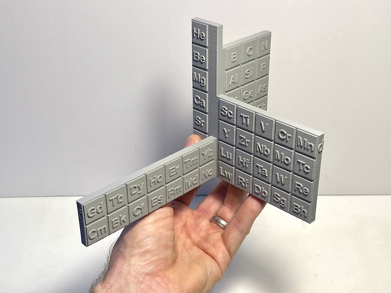
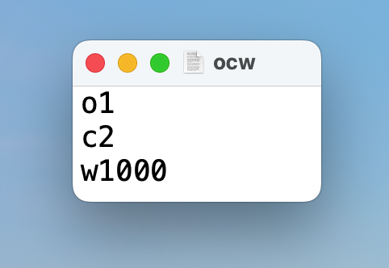

open.groverlab.org
Open-source hardware and software made with ❤ by the Grover Lab

3D-printable model of Paul Giguere's 3D periodic table of the elements

OCW: A really simple language for controlling microfluidic valves